5. Introducción para CESE
Introducción a inteligencia artificial para alumnos de CESE
IA, ML, redes neuronales y deep learning
Ciclo de vida de un proyecto de IA
Tipos de problemas: regresión y clasificación
Entrenamiento: optimización, sobreajuste e hiperparámetros
Arquitecturas: neuronas, activaciones y tipos de capas
Redes de visión: de LeNet a MobileNet
Ejemplos intuitivos
Sección de nivelación para quienes vienen de embebidos (CESE): lo mínimo de IA
para seguir el resto de la materia. Para los de CEIA es repaso; pueden aportar
ejemplos o dudas desde su experiencia.
El foco está en entender qué es un modelo, cómo se entrena y qué operaciones
hace (capas densas y convolucionales), porque eso es lo que después vamos a
comprimir y desplegar.
IA, ML, redes neuronales y deep learning
Mostrar la figura completa antes de explicar: son conjuntos anidados.
Pregunta para el grupo: ¿dónde ubicarían algo que usen en su trabajo (un filtro de Kalman,
un clasificador, un LLM)?
IA, ML, redes neuronales y deep learning
IA: cualquier simulación o imitación de la inteligencia humana en una
máquina se considera IA. Programación de máquinas que imitan el pensamiento, el aprendizaje y la resolución de
problemas humanos.
ML: la metodología de entrenar un sistema con el fin de aprender de datos
del pasado para realizar predicciones y tomar decisiones más precisas.
ANN: sistemas de ML inspirados por el cerebro humano. Consisten en unidades
(neuronas) conectadas en una capa para aprender relaciones entre las entradas y las salidas.
DL: grandes estructuras de redes neuronales con múltiples capas capaces de
extraer características de entrada con el fin de obtener una buena representación entre entradas y salidas.
Ir mostrando las definiciones de a una (fragmentos).
IA es el paraguas; ML aprende de datos en vez de reglas escritas a mano; las redes
neuronales son un tipo de modelo de ML; deep learning son redes con muchas capas.
En la materia trabajamos casi todo el tiempo dentro de DL.
Ciclo de vida de un proyecto de IA
Un recorrido por las etapas fundamentales
Presentar el ciclo completo. La idea para CESE: un proyecto de IA no es solo "el modelo";
la mayor parte del trabajo está en los datos y en llevarlo a producción.
Las flechas de vuelta muestran que es iterativo.
Ciclo de vida de un proyecto de IA
Adquisición de datos
Materia prima: sensores, imágenes, texto, IoT.Calidad: "Garbage in, garbage out".
Los datos vienen de sensores, cámaras, texto, IoT: muchas veces de un sistema embebido.
"Garbage in, garbage out": un modelo no puede ser mejor que sus datos.
Ciclo de vida de un proyecto de IA
Preparación de datos
Limpieza y etiquetado: ordenar la casa.Esfuerzo: representa el 80% del tiempo del proyecto.
Limpiar, etiquetar, balancear clases, separar en entrenamiento/validación/test.
Suele ser la etapa que más tiempo lleva (el 80 % es una cifra habitual, orientativa).
Ciclo de vida de un proyecto de IA
Diseño de modelos
Búsqueda de la representación matemática ideal para aprender patrones.
Elegir el tipo de modelo y su arquitectura. Para nosotros, acá aparece la primera
decisión de "embebido": elegir desde el principio un modelo que pueda entrar en el hardware.
Ciclo de vida de un proyecto de IA
Entrenamiento e inferencia
Entrenamiento: proceso de aprendizaje (requiere GPU y energía).Inferencia: uso del modelo en producción (ejecución).
Distinción clave para toda la materia: entrenar es caro y se hace una vez (en GPU, en la
nube o en una PC); la inferencia se hace millones de veces y es lo que corre en el dispositivo.
La compresión apunta sobre todo a abaratar la inferencia.
Ciclo de vida de un proyecto de IA
Evaluación: clasificación
Precisión: ¿cuánto de lo que predigo es correcto?Recall / sensibilidad: ¿cuánto de la realidad detecto?F1-score: balance entre ambos.
Accuracy sola puede engañar con clases desbalanceadas.
Precisión: de lo que marqué como positivo, cuánto era positivo. Recall: de los positivos
reales, cuántos encontré. F1 combina ambas.
La tabla de la derecha es de referencia; no recorrerla entera.
Ciclo de vida de un proyecto de IA
Evaluación: regresión
MSE (Mean Squared Error): penaliza errores grandes.MAE (Mean Absolute Error): más fácil de interpretar.R² (coeficiente de determinación): ¿qué tan bien se ajusta la curva?
MSE castiga más los errores grandes (por el cuadrado); MAE está en las mismas unidades que
la variable; R² dice qué fracción de la variabilidad explica el modelo (1 = perfecto).
Ciclo de vida de un proyecto de IA
Despliegue
Llevar la IA al mundo real (app, microcontrolador, nube).
Desafíos: latencia, escalabilidad y mantenimiento.
Despliegue es llevar el modelo a donde se usa: una app, un servidor o un microcontrolador.
Es la etapa de la que trata gran parte de esta materia. Aparecen requisitos nuevos:
latencia, memoria, energía, actualizaciones.
Ciclo de vida de un proyecto de IA
Ideas clave
El éxito depende más de los datos que del algoritmo.
La evaluación debe ser rigurosa y penalizar el impacto real.
El despliegue cierra el ciclo pero requiere monitoreo constante.
Cerrar el ciclo con tres ideas: los datos pesan más que el algoritmo, evaluar con la
métrica que importa para la aplicación, y el despliegue requiere monitoreo (los datos reales
cambian con el tiempo: data drift).
Tipos de problemas
De manera general existen dos tipos de problemas:
Regresión: consiste en predecir un valor continuo a partir de un conjunto de datos .
Clasificación: consiste en predecir una categoría o etiqueta a partir de un
conjunto de datos .
Los datos son la materia prima de los algoritmos de IA.
Las dos grandes familias de problemas supervisados.
Ejemplos: regresión = estimar temperatura o distancia; clasificación = qué objeto hay en la
imagen (como en la demo).
Regresión lineal
Tipo de problema: predicción continua (regresión).Modela relación entre variable dependiente ($y$) e independientes ($X$).
Busca minimizar la suma de errores cuadráticos (MSE o
mínimos cuadrados).
β = (XT X)-1 XT y
¡Tiene solución analítica cerrada! Los coeficientes exactos se calculan directamente en un solo
paso (OLS).
El modelo más simple. Tiene solución cerrada: los coeficientes se calculan en un paso
(mínimos cuadrados). Esto contrasta con lo que viene: casi nada más en ML tiene solución cerrada.
Regresión logística
Tipo de problema: clasificación (predice probabilidades).
Emplea una función sigmoide para acotar las salidas entre
0
y 1.
Busca maximizar la función de log-verosimilitud .
¡NO tiene solución analítica cerrada! Requiere algoritmos de optimización numérica
iterativos
(ej. descenso de gradiente o Newton-Raphson).
A pesar del nombre, es un clasificador: la sigmoide convierte una salida lineal en una
probabilidad entre 0 y 1.
No tiene solución cerrada: hay que optimizar numéricamente (descenso por gradiente).
Una neurona con activación sigmoide es exactamente una regresión logística.
Datos, cómputo y el paradigma ML/DL
Al pasar de algoritmos clásicos a ML/DL, los modelos se definen como problemas de
optimización (regresión/clasificación).
Se pueden resolver problemas más complejos.
Están completamente impulsados por los datos , que son más complejos.
Se requieren modelos con complejidad proporcional a la tarea.
El modelo hace la parte del preprocesamiento de datos.
Casi nunca tienen forma cerrada : dependen un 100% de la optimización numérica para
ajustar sus parámetros.
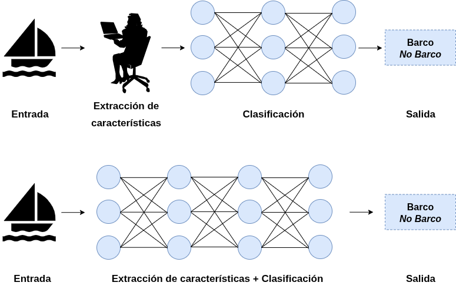
El poder de la IA está atado a poder de cómputo y la abundancia de datos, que permiten entrenar modelos más
complejos.
El cambio de paradigma: en vez de diseñar el algoritmo y las features a mano, se define un
modelo grande y se lo ajusta con datos. Funciona porque hoy hay muchos datos y mucho cómputo.
Consecuencia para nosotros: los modelos resultantes son grandes, y hay que achicarlos.
¿Qué es un modelo matemático?
Una función paramétrica que aproxima una relación entre datos:
y = f(x; θ)
Entradas (x): datos observados (features).Salidas (y): predicción o decisión.Parámetros (θ): valores internos ajustables de la función.Ejemplos:
Regresión lineal:
y = β0 + β1 x1 + ... + βn xn
Regresión logística:
y = σ(β0 + β1 x1 + ... + βn xn )
Modelo cuadrático: y = ax2 + bx + c
Recta + senoide: y = a x + b + c sin(d x + e)
Una neurona: y = φ(∑wi xi + b)
Definición que usamos en toda la materia: y = f(x; θ). x son las entradas, θ los
parámetros que se aprenden.
Recorrer los ejemplos de menor a mayor: hasta una neurona es una función paramétrica más.
Comprimir un modelo es, en el fondo, cambiar f o θ para que sean más baratos.
Entrenamiento vs. inferencia
Inferencia: ejecutar el modelo f(x, θ) con
parámetros fijos para generar salidas ante nuevos datos.Entrenamiento: proceso iterativo de optimización donde se ajustan los parámetros
θ para minimizar la discrepancia (error) entre la predicción y el valor real.
Volver a remarcar: en inferencia θ está fijo; en entrenamiento θ cambia.
Para un sistema embebido, casi siempre solo nos importa la inferencia.
Proceso de optimización
Gradiente descendente: algoritmo para minimizar el error.
Calcula el gradiente (derivada) de la función de costo y actualiza los parámetros en dirección contraria a la
pendiente.Backpropagation: método eficiente para computar gradientes en redes neuronales, propagando el
error hacia atrás mediante la aplicación sucesiva de la regla de la cadena.
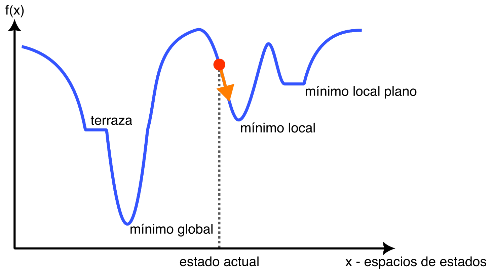
Gradiente descendente: dar pasos en la dirección que más reduce el error.
Backpropagation: la forma eficiente de calcular esos gradientes en una red, con la regla de
la cadena. No hace falta el detalle matemático para la materia; sí la idea de que entrenar
es iterativo y costoso.
Sobreajuste vs subajuste
🔴 Overfitting (Sobreajuste):
El modelo es demasiado complejo y memoriza ruido.
Excelente en entrenamiento, pésimo en generalización.
🔴 Underfitting (Subajuste):
El modelo es demasiado simple para captar patrones.
Falla incluso en los datos de entrenamiento.
🎯 Good fit: equilibrio ideal para generalizar.
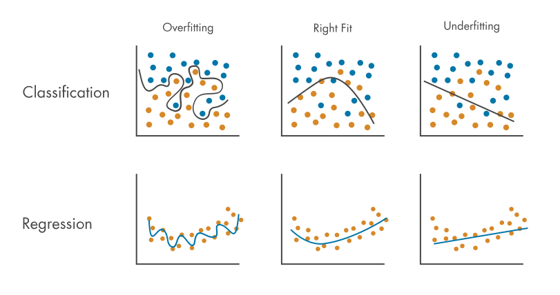
Fuente: MathWorks - Overfitting
Overfitting: el modelo memoriza el entrenamiento y no generaliza. Underfitting: el modelo
no alcanza ni para el entrenamiento.
Conexión con la materia: un modelo más chico tiende al underfitting; uno sobredimensionado
desperdicia recursos. Comprimir bien es encontrar el punto justo.
Sesgo vs varianza
📌 Sesgo (Bias):
Suposiciones demasiado simples (ej. asumir linealidad). Resulta típicamente en underfitting .
📌 Varianza (Variance):
Sensibilidad excesiva al set de entrenamiento. Resulta típicamente en overfitting .
💡 El trade-off sesgo-varianza
Ajustar la complejidad (mediante regularización, más
datos o validación cruzada) para lograr un balance óptimo.
Otra forma de ver lo mismo: sesgo alto ≈ underfitting, varianza alta ≈ overfitting.
El ajuste de la complejidad del modelo es un compromiso, igual que el de la materia entre
tamaño y accuracy.
Hiperparámetros
Variables de ajuste configurados antes del entrenamiento que
impactan rendimiento y tiempos:
Tasa de aprendizaje (Learning rate): tamaño del paso al
actualizar parámetros.Épocas (Epochs): cuántas veces el algoritmo recorre
todo el conjunto de entrenamiento.
Tamaño de lote (Batch size): cantidad de muestras analizadas en paralelo antes de realizar un
ajuste.
Hiperparámetros: lo que se elige antes de entrenar (no se aprende).
Learning rate, épocas y batch size son los tres que van a ver en todos los scripts del curso.
Arquitectura de redes
De la neurona a la red neuronal
Neuronas y activaciones
Capas: densas, convolucionales, recurrentes
Capas de soporte: pooling, dropout, batchnorm
Perceptrón multicapa
Estructura típica para redes de visión artificial
Topologías avanzadas: múltiples caminos y conexiones residuales
Ejemplos de redes neuronales para visión artificial
Agenda de la parte de arquitecturas: de la neurona a las redes de visión completas.
Mientras avanzamos, prestar atención a cuántos parámetros y operaciones agrega cada tipo
de capa: es lo que después vamos a comprimir.
Neuronas
El perceptrón es la unidad fundamental de las redes neuronales.
Recibe múltiples entradas ponderadas por
pesos .
Suma todas las contribuciones y agrega un sesgo (bias) .
Pasa el resultado por una función de activación no lineal.
Una neurona: suma ponderada de las entradas más un sesgo, y una activación no lineal.
Para los de embebidos: es una multiplicación-acumulación (MAC) por entrada, más una función.
Contar MACs es la forma básica de medir el costo de una red.
Funciones de activación
Son funciones no lineales que se aplican a la salida de la neurona.
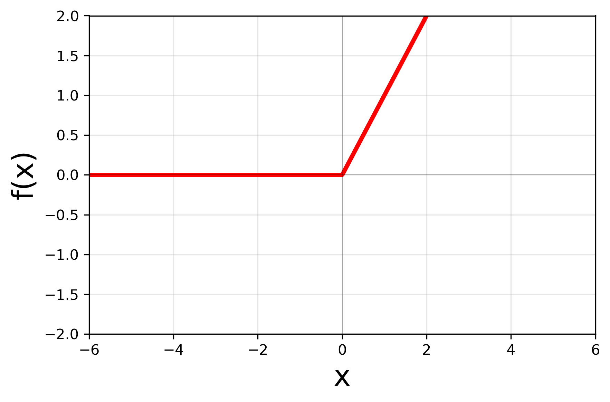
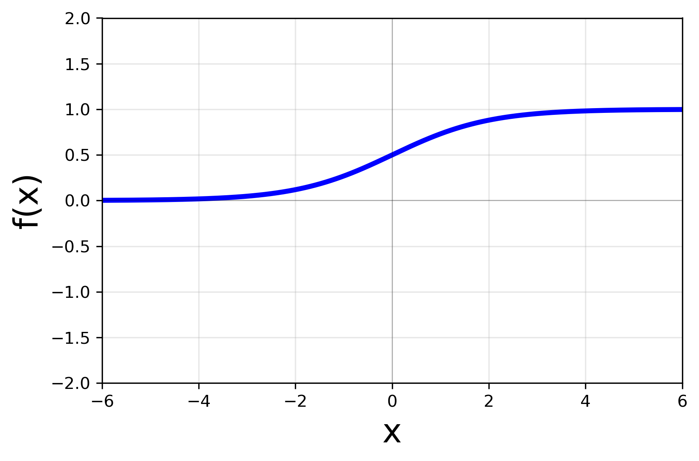
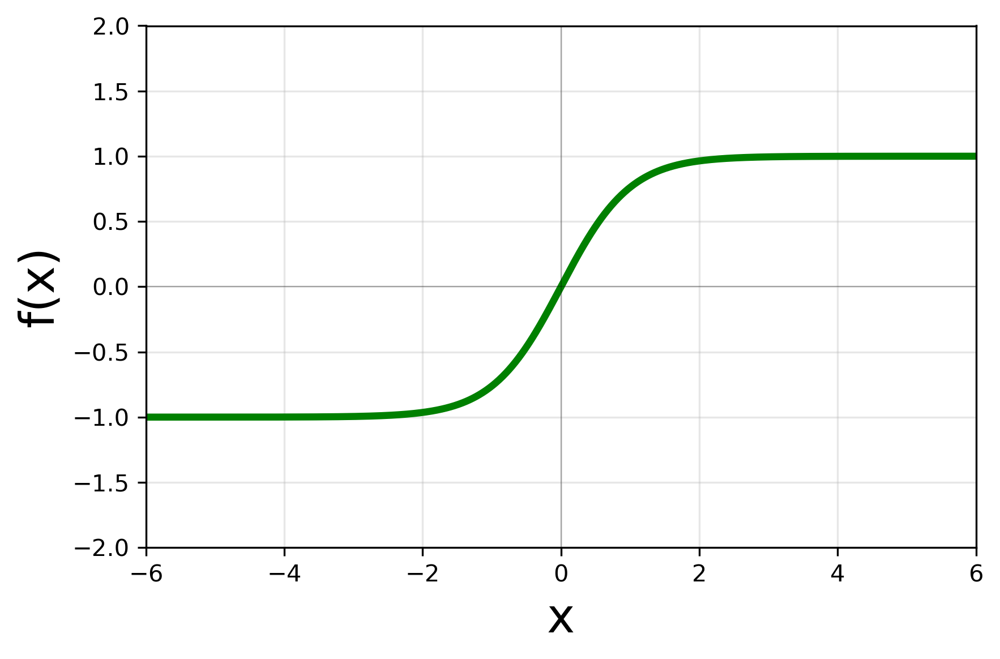
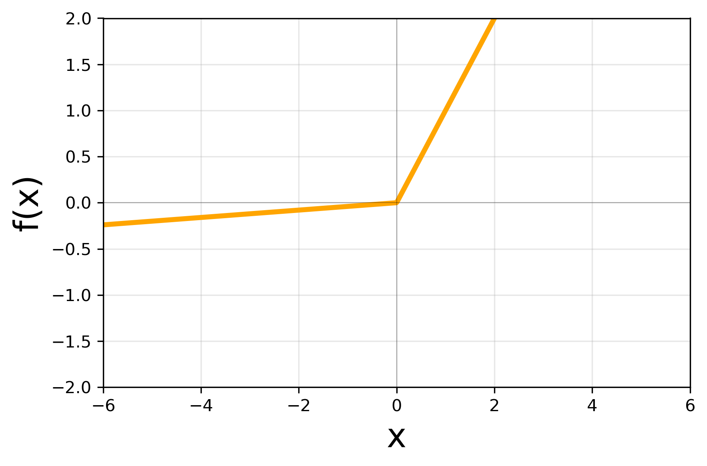
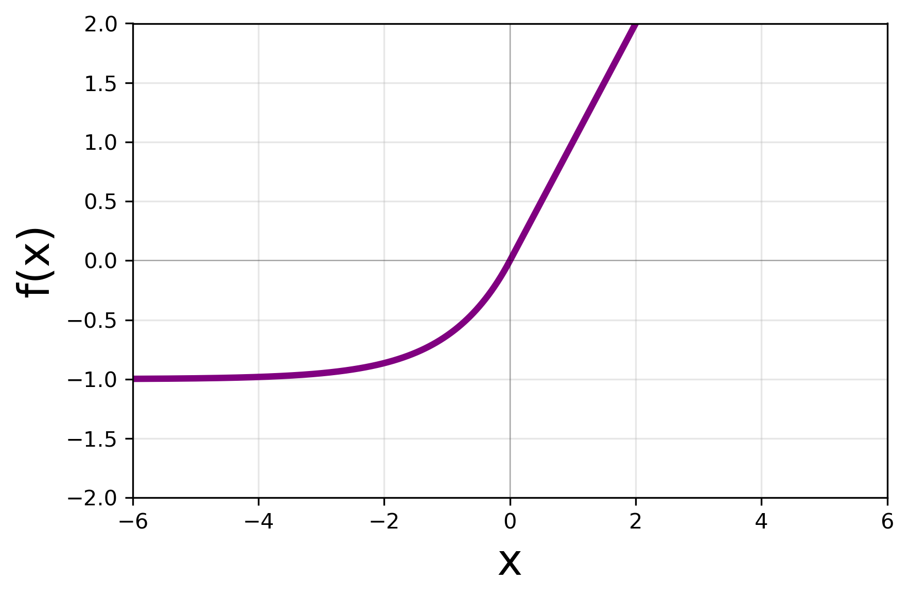
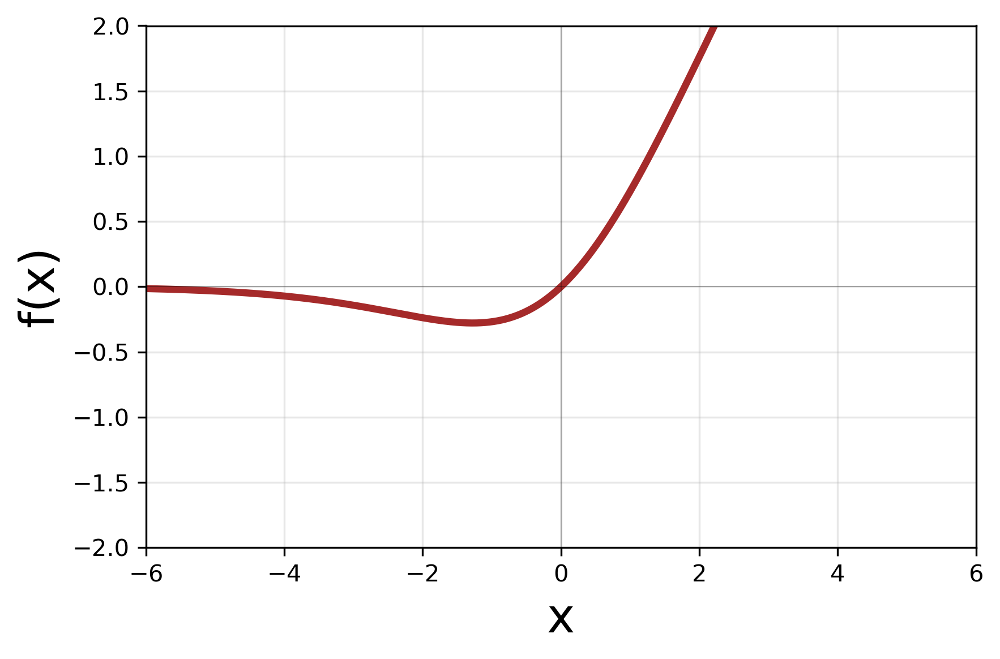
Sin activaciones no lineales, apilar capas es equivalente a una sola capa lineal.
ReLU es la más usada: barata (un max con cero), ideal para hardware. Sigmoide y tanh
requieren exponenciales: más caras en un microcontrolador.
Capas densas
También conocidas como fully connected (FC) .
Cada neurona está conectada a todas las neuronas de la
capa anterior.
Gran cantidad de parámetros: propensa al overfitting y costosa computacionalmente.
Cada salida depende de todas las entradas: parámetros = entradas × salidas (+ sesgos).
Ejemplo: 1000 entradas y 1000 salidas son 1 millón de pesos (4 MB en FP32), más que la RAM
de la ESP32-CAM.
Capas convolucionales (CNN)
Especialmente diseñadas para datos con estructura espacial (imágenes).
La idea es aplicar filtros (kernels) que se deslizan
sobre
la entrada.
Extraen características locales de bajo y alto nivel estructural.
Compartición de pesos: reduce drásticamente los parámetros frente a las capas densas.
Un mismo filtro chico se aplica en toda la imagen: compartir pesos reduce muchísimo los
parámetros respecto a una densa.
Pero el costo en operaciones (MACs) sigue siendo alto, porque el filtro se aplica en cada posición.
Capas convolucionales (CNN)
Mostrar la animación: el kernel se desliza y en cada posición hace una suma de productos.
Con varios canales de entrada, el filtro tiene profundidad; con varios filtros, hay varios
canales de salida. MACs ≈ alto × ancho de salida × canales de salida × (k × k × canales de entrada).
Capas recurrentes (RNN, GRU, LSTM)
Ideales para datos con estructura secuencial o
temporal (texto, series temporales).
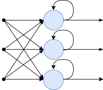
RNN: tienen memoria (estado
interno). Sufren desvanecimiento de gradiente con secuencias largas.
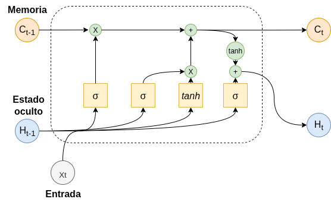
LSTM (Long Short-Term Memory):
resuelven lo anterior con compuertas para retener memoria a largo plazo.
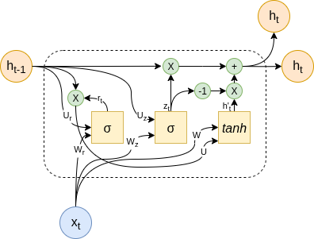
GRU (Gated Recurrent Unit): versión
simplificada de LSTM con rendimiento similar y menos cómputo.
Para secuencias (audio, texto, series de tiempo). Mantienen un estado entre pasos.
LSTM y GRU agregan compuertas para recordar más tiempo.
En la materia nos enfocamos en CNN; las mencionamos para que sepan que existen.
Capas de soporte
Ayudan a regularizar, reducir tamaño y estabilizar la red neuronal.
Pooling (Max/Average)
Reduce dimensiones espaciales conservando lo más relevante.
Flatten
Transforma tensores multidimensionales en vectores 1D.
Pooling reduce el tamaño espacial (menos cómputo en las capas siguientes) sin parámetros.
Flatten solo reacomoda el tensor para conectarlo a capas densas: no hace cálculos.
Capas de soporte
Ayudan a regularizar, reducir tamaño y estabilizar la red neuronal.
Batch Normalization
Centra y escala las activaciones. Acelera y estabiliza
el entrenamiento.
Dropout
Apaga neuronas aleatoriamente para forzar
independencia y evitar overfitting .
Estas capas tienen comportamiento diferente en entrenamiento y en inferencia.
BatchNorm y Dropout se comportan distinto en entrenamiento y en inferencia.
Importante para embebidos: en inferencia BatchNorm es una operación lineal fija que se puede
fusionar con la convolución anterior (BN folding, lo vemos en optimización algorítmica), y
Dropout directamente desaparece.
Perceptrón multicapa (MLP)
Una arquitectura clásica y fundamental.
Múltiples capas de neuronas densas formadas por la capa de entrada,
capas ocultas y capa de salida.
La información fluye en una sola dirección (feedforward).
Teóricamente capaz de aproximar cualquier función continua matemática compleja.
Varias capas densas apiladas. Con suficientes neuronas puede aproximar cualquier función
continua (teorema de aproximación universal), pero eso no dice nada sobre su tamaño ni costo.
Estructura típica para redes de visión artificial
Dividida típicamente en dos grandes bloques:
Extracción de características (Backbone):
Capas convolucionales para detectar patrones (bordes, texturas, formas).
Capas de pooling para reducir dimensiones espaciales.
Suele incluir Batch Normalization para estabilidad durante el entrenamiento.
Las redes de visión tienen dos partes. El backbone extrae características con convoluciones
y pooling; es donde está la mayor parte de las operaciones.
Estructura típica para redes de visión artificial
Dividida típicamente en dos grandes bloques:
Cabeza de la red (Head):
Capas densas (fully connected) para interpretar los patrones extraídos.
Puede contener Batch Normalization y Dropout para
regularización.
Activación final:
Lineal: para problemas de regresión (valores continuos).Softmax (o Sigmoide): para clasificación (probabilidades por categoría).
La cabeza interpreta esas características y da la salida: lineal para regresión, softmax
para clasificación. Suele concentrar muchos parámetros (capas densas) aunque pocas operaciones.
Topologías avanzadas
Conexiones residuales (skip connections):
Permiten que la información "salte" capas sin ser modificada.
Evitan el problema de desvanecimiento del gradiente en redes ultra-profundas.
Redes con múltiples caminos (ramificaciones):
Procesan la información en paralelo usando filtros de distintos tamaños sobre la misma entrada.
Combinan/concatenan los resultados al final del bloque.
Las redes modernas no son una cadena simple: tienen conexiones residuales (ResNet) y
caminos en paralelo (Inception).
Para embebidos importa porque hay que guardar activaciones de varios caminos a la vez:
más memoria intermedia.
Ejemplos de redes
Breve recorrido histórico de arquitecturas exitosas y su influencia en visión
artificial.
Recorrido rápido por redes clásicas de visión, en orden cronológico. Mirar cómo evolucionan
parámetros y eficiencia.
LeNet-5 (1998)
Pionera en el uso práctico de redes convolucionales.
Diseñada por Yann LeCun para reconocimiento manuscrito de códigos
postales
y cheques.
Marcó el estándar inicial de estructura: Conv → Pool →
Conv
→ Pool → FC .
La red pionera (1998): reconocer dígitos manuscritos. Es chica (~60 mil parámetros) y es
la que se ve en la visualización interactiva del final.
AlexNet (2012)
El despegue que impulsó la revolución del deep learning.
Ganó el concurso ImageNet destruyendo los métodos tradicionales.
Popularizó la función de activación ReLU y el uso de
Dropout libremente.
Aprovechó de lleno el poder paralelo de las GPUs modernas.
2012: el punto de inflexión. Ganó ImageNet por mucho gracias a una red grande entrenada en
GPUs, con ReLU y Dropout.
VGG (2014)
Más profundidad con un canon de simplicidad estructural absoluta.
Demostró empíricamente que apilar muchos filtros pequeños (3x3) era
mejor
que usar filtros grandes.
Modelos masivos (VGG-16, VGG-19) referenciando capas que tenían.
Muy pesadas y computacionalmente costosas (más de 138 millones de parámetros).
Mucha profundidad con filtros 3x3. Muy precisa para su época, pero enorme: ~138 millones
de parámetros. Es el ejemplo típico de red que no entra en un embebido.
Inception / GoogLeNet (2014)
Uso temprano de múltiples caminos .
Superó a VGG siendo mucho más liviana.
Cada módulo Inception aplica filtros 1x1, 3x3 y 5x5 en
paralelo.
Uso de convoluciones "cuello de botella" (1x1) para reducir costo computacional.
Varios filtros en paralelo y convoluciones 1x1 para reducir canales antes de las convoluciones grandes.
Mejor que VGG con muchos menos parámetros: primer ejemplo de diseño pensando en eficiencia.
ResNet (2015)
El santo grial moderno: las verdaderas redes hiperprofundas.
Introdujo los bloques residuales (skip connections )
estructurales.
Demostró algo crucial: permitir entrenar cientos de capas sin el
problema
de desaparición del gradiente.
Cimentó el pilar arquitectónico de casi cualquier diseño moderno.
Las conexiones residuales permiten entrenar redes de cientos de capas. Hoy casi toda
arquitectura las usa.
MobileNet (2017)
Eficiencia y miniaturización total para Embedded AI e IoT.
Reemplazó las convoluciones estándar por convoluciones separables en
profundidad (Depthwise Separable ).
Cae la complejidad multiplicativa abismalmente.
Hizo viable correr modelos de visión en tiempo real sobre hardware móvil en los bordes.
Diseñada para móviles: reemplaza la convolución estándar por depthwise separable, que hace
muchas menos operaciones. Es la idea que usa el modelo chico de la demo.
Resumen de redes de visión
Red
Año
Parámetros
Accuracy (ImageNet, top-5)
Uso / innovación destacada
LeNet-5 1998
~ 60 K
N/A (dígitos de MNIST)
Reconocimiento de dígitos y OCR básico.
AlexNet 2012
~ 60 M
~ 84.7%
Pionera en popularizar el deep learning con GPUs y ReLU.
VGG-16 2014
~ 138 M
~ 92.7%
Canon de simplicidad, pero muy costosa computacionalmente.
Inception-V1 (GoogLeNet) 2014
~ 7 M
~ 93.3%
Extremadamente eficiente. Introdujo múltiples caminos.
ResNet-50 2015
~ 25 M
~ 93.3%
Estándar moderno en la industria gracias a las conexiones residuales.
MobileNet-V1 2017
~ 4.2 M
~ 89.5%
Prioriza la eficiencia para dispositivos móviles (IoT, Edge AI).
Accuracy top-5 reportada en cada paper original;
los protocolos de evaluación (recortes, ensambles) varían entre papers.
Hacer notar la tendencia: de VGG (138 M) a MobileNet (4.2 M) con accuracy parecida.
Mejorar la arquitectura es una de las formas más efectivas de "comprimir".
Las cifras de accuracy son las de cada paper (protocolos distintos); por ejemplo, ResNet-50
da 93.3 % con 10 recortes (He et al., 2015) y ~92.9 % con un solo recorte.
Ejemplos intuitivos
Dos ejemplos concretos para desarrollar intuición sobre cómo
aprenden los modelos:
①
Ajuste de función 1D: modelos de complejidad creciente aprenden
y = ax + b + c·sin(dx + e) - desde regresión lineal hasta redes neuronales.
②
Visualización interactiva de una LeNet: veremos cómo fluyen los datos
a través de una red convolucional, capa por capa, en tiempo real.
Dos ejemplos para desarrollar intuición antes de cerrar la sección: ajustar una función
1D con modelos de complejidad creciente, y ver por dentro una LeNet.
Ejemplo 1 - El problema
Modelos probados, de menor a mayor complejidad:
Regresión lineal ax + b
Lineal + senoide ax + b + c·sin(dx+e)
Neurona sola con ReLU
Capa densa (sin hidden)
MLP - 1 capa, 8 neuronas
MLP - 1 capa, 128 neuronas
MLP - 2 capas, 8×8 neuronas
MLP - 2 capas, 64×64 neuronas
Los datos siguen una recta más una senoide con ruido. Se prueban modelos de menor a mayor
complejidad, desde regresión lineal hasta MLPs de dos capas.
Pregunta para el grupo: ¿cuál creen que va a ajustar mejor?
Ejemplo 1 - Ajustes
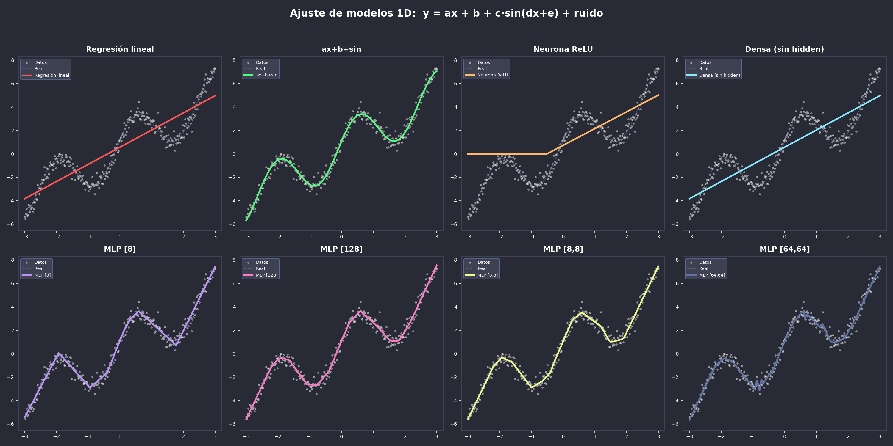
Comparar: los modelos simples no alcanzan (underfitting); el modelo con la forma correcta
(lineal + senoide) ajusta con muy pocos parámetros; los MLP grandes ajustan pero con muchos
más parámetros. Conocer el problema permite modelos mucho más chicos.
Ejemplo 2 - Visualización 2D de una LeNet
Abrir el link y dibujar un dígito: se ven las activaciones de cada capa en tiempo real.
Sirve para ver que cada capa es una transformación concreta, con un costo concreto.
Resumen: introducción para CESE
El ciclo de vida de un proyecto de IA es iterativo e incluye
desde la definición de datos hasta el despliegue del modelo.
Los modelos matemáticos aprenden de los datos mediante el
entrenamiento (ajustando parámetros), para luego realizar la inferencia de manera rápida y eficiente.
Las arquitecturas de redes neuronales se componen de distintas
capas (densas, convolucionales, recurrentes, pooling, etc.) y topologías según la tarea a resolver.
La intuición práctica es vital: ver cómo ajusta una regresión
1D y cómo activan los mapas visuales en una CNN nos ayuda a entender "qué ve" y cómo procesa la red.
Resumen de la nivelación. Lo importante para el resto de la materia: un modelo es una
función con parámetros; entrenar es caro pero se hace una vez; la inferencia es lo que corre
en el dispositivo; y cada capa tiene un costo en parámetros y en operaciones que podemos medir
y reducir.